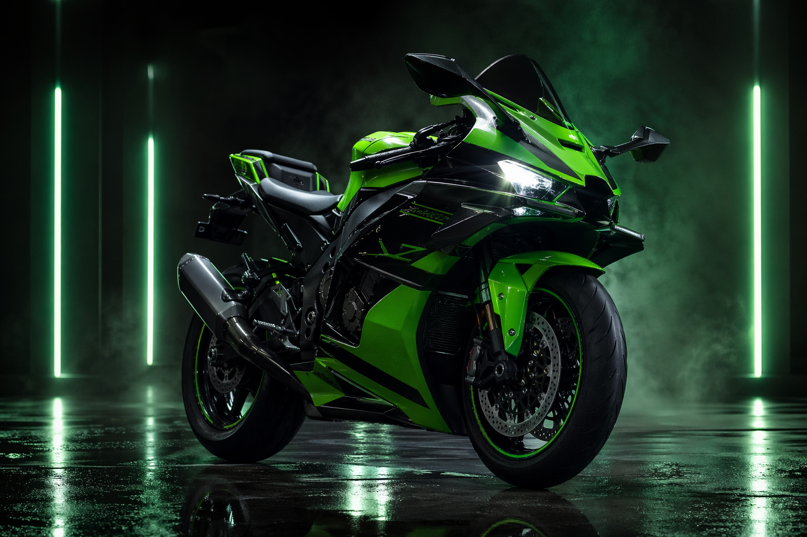
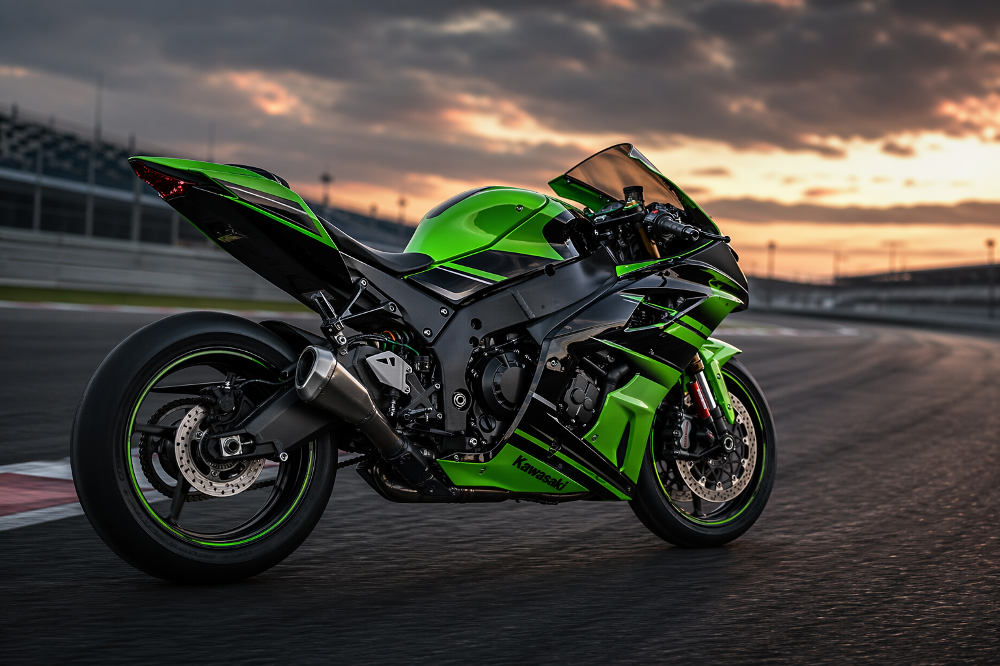

SUPERBIKE ICON
Una máquina nacida para perseguir décimas.
La Kawasaki Ninja ZX-10R mezcla potencia de 998 cc, aerodinámica afinada y una herencia de competición que la convirtió en una de las referencias absolutas del universo superbike.

Track-bred
PUSH THE LIMIT
HISTORIA DE LA ZX-10R
La línea Ninja llevó la obsesión por el rendimiento a otro nivel.
Los primeros motores de Kawasaki
Kawasaki comenzó a fabricar motores para motocicletas, aprovechando experiencia procedente del desarrollo de motores aeronáuticos.
Llega la primera moto con marca Kawasaki
La firma presentó la B7, un paso clave para convertir su ingeniería en una identidad propia dentro del motociclismo.
El apellido Ninja se vuelve sinónimo de superbike
La familia Ninja consolidó un lenguaje de diseño afilado, tecnología de pista y postura radical. La ZX-10R heredó esa filosofía y la llevó al segmento litro.
ZX-10R: precisión de competición homologada para calle
Kawasaki describe la ZX-10R actual como una superbike de nueva generación con winglets aerodinámicos, chasis afinado, electrónica avanzada e instrumentación TFT conectada.
LA EMPRESA QUE LA FABRICA
Kawasaki no nació haciendo motos: nació construyendo futuro.
Kawasaki Heavy Industries remonta sus orígenes a 1878, cuando Shozo Kawasaki fundó un astillero en Tokio. Con el tiempo, el grupo se expandió hacia ferrocarriles, energía, aeroespacial, robótica e infraestructura.
Dentro de ese ecosistema tecnológico, la división de motocicletas y motores es la cara más cercana al consumidor final. Esa mezcla de ingeniería industrial y cultura racing explica por qué una moto como la ZX-10R transmite tanta sensación de precisión mecánica.
Fundación: 1878
Incorporación: 15 de octubre de 1896
Marca global de motocicletas Kawasaki
“Technology corporate group” es cómo Kawasaki define su identidad: una empresa cuya capacidad técnica atraviesa tierra, mar, aire y, también, la adrenalina sobre dos ruedas.
ADN TÉCNICO
Qué hace especial a la Kawasaki Ninja ZX-10R.
998 cc inline-4
Un cuatro cilindros refrigerado por líquido con enfoque claro en aceleración alta, estabilidad térmica y sensación de superbike auténtica.
Winglets con carga real
El rediseño frontal genera aproximadamente un 25% más de downforce para mejorar el tacto del tren delantero y el paso por curva.
Showa + Brembo + Öhlins
Suspensión Balance Free, frenos Brembo y amortiguador de dirección Öhlins convierten la precisión en una sensación tangible.
IMU y ayudas avanzadas
KCMF, S-KTRC, KLCM, KIBS, quick shifter y riding modes forman un paquete pensado para ir rápido con más control.
GALERÍA
Presencia visual de una superbike hecha para dominar rectas y curvas.
La ZX-10R no solo impresiona por cifras. Su silueta baja, el frontal tenso y las superficies anguladas proyectan una mezcla de agresividad y control que pocas motos consiguen.

LEGADO
De la ingeniería pesada al ícono deportivo.
Kawasaki pasó de astilleros y motores industriales a crear una de las motocicletas más reconocibles del alto rendimiento.
CONCLUSIÓN
No es solo una moto rápida. Es una declaración de intención.
La Kawasaki Ninja ZX-10R representa una idea muy concreta del motociclismo: ingeniería extrema, herencia de competición y una estética que parece estar siempre a un segundo de salir disparada.
Volver arriba